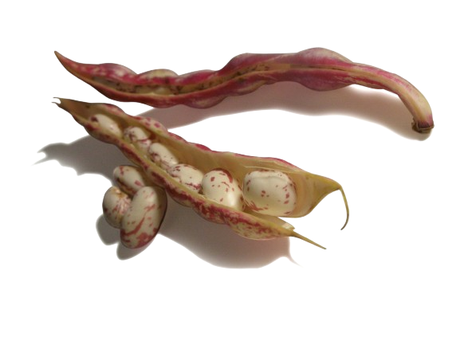

Pre-colonial Era
Traditional diets of indigenous communities incorporated beans,
rice and plantains
16th Century
Spanish colonization introduced ingredients like pork, beef and
chorizo to Colombian cusine

Colonial Era to 19th Century
African slaves brought by the Spanish contributed cooking
techniques and spices that influences the dish
19th Century
Origins in the Antioquia region, where high numbers of freed
slaves resided, as a meal for farmers and cattle herders